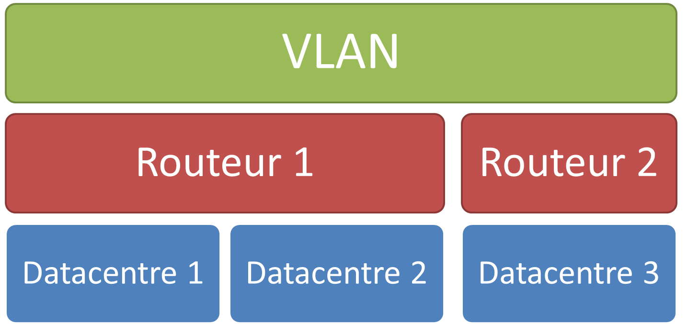
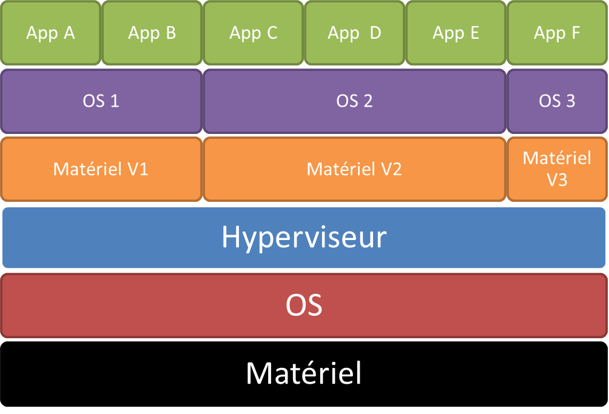
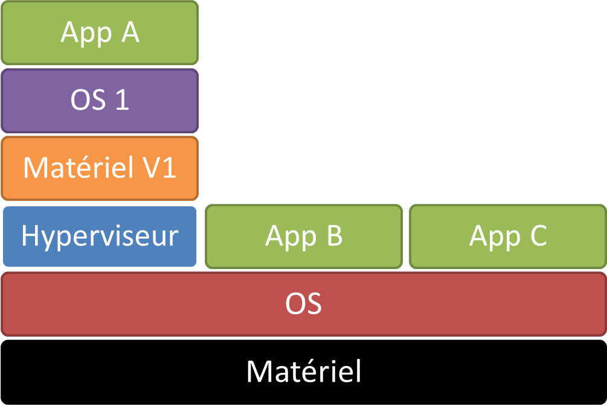
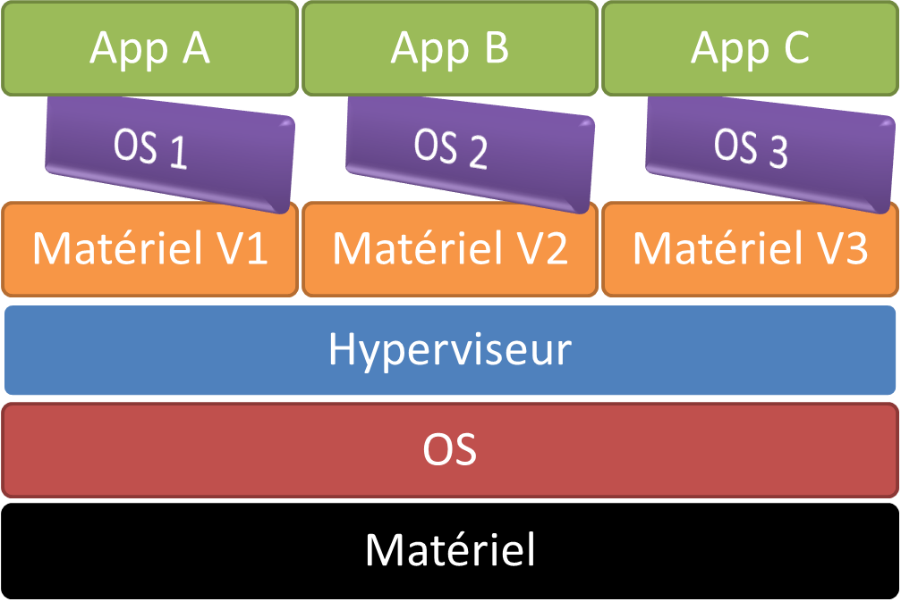

Notion de répartition des ressources
Rappels d'architecture du matériel
Ressources : CPU, RAM, Stockages, Réseau, etc.
Utilisation : OS, BIOS, microgiciels, etc.
Domaines de virtualisation
- Applications
- Réseaux
- Stockages
- Serveurs
Virtualisation des applications
Une couche d'abstraction (middleware...) permet de rendre les applications indépendantes de l'OS.
- > Wine
- > JVM
- > Languages interprétés...
Virtualisation des applications

Virtualisation du réseau :
Définition et exécution de fonction réseau au niveau logique.
On partage le physique et on "masque" aux utilisateurs la virtualisation.
On parle alors de "Virtual LAN" (VLAN)
- > Limite la charge réseau
- > Maintenance facilitée
Virtualisation des applications

Virtualisation du stockage :
- > Extension de la notion de "partition" de disque dur.
- > Généralisation sur des agrégations réparties de stockage.
- > Se base sur une application de gestion de volumes logiques.
Virtualisation du stockage :
- > Ajout de disque/suppression de disque sans coupure
- > Ré-allocation dynamique de volume
- > Mix de types (SSD/HD), de marques, de modèles de disques.
Virtualisation du stockage :

Virtualisation des serveurs :
Masquer les ressources du serveur physique (hôte), et les diviser dans des entités virtuelles.
Ces entités, appellées "invités" sont des serveurs complets virtuels.
Virtualisation des serveurs :

Critères de virtualisation
- Equivalence
- Efficacité
- Contrôle des ressources
Critères de virtualisation
Equivalence :
Un programme doit se comporter de la même manière en "natif" comme en "virtualisé".
Critères de virtualisation
Efficacité :
Un ensemble majoritaire des instructions de calculs virtualisées doivent être exécutées nativement par l'hôte.
Critères de virtualisation
Contrôle des ressources :
L'hôte a le contrôle total des ressources. Un invité ne peut accéder aux ressources sans passer par l'hyperviseur de virtualisation.
Avantages de la virtualisation
- > Optimisation de l'utilisation des ressources (Ex: résultats BAC)
- > Réduction des dépenses énergétiques
- > Meilleure reprise sur erreur (moins dépendant des pannes physiques)
- > Flexibilité des applications
Inconvénients de la virtualisation
- > Création de SPOFs
- > Complexité analytique accrue
- > Dégradation de performances possible (I/O)
- > Pas de standard !
Types de virtualisations
- Machines virtuelles (type 1 / type 2) : VMWare, VirtualBox
- Para-virtualisation : Xen, HyperV
- Containeurs : LXC, Docker, Jails
Types de virtualisations
Hyperviseur (VMs) de type 1

Types de virtualisations
Hyperviseur (VMs) de type 2

Types de virtualisations
Para-virtualisation
- > Meilleures performances
- > Mais OS modifiés : compatibilité faible
Types de virtualisations
Para-virtualisation

Types de virtualisations
Containeurs
- > Performances quasi-natives
- > Mais OS homogènes + unicité App dans containeur
Types de virtualisations
Containeurs

Un peu de pratique : CPU
- CPU - VT-X
- Dynamic RAM / VRAM
- Périphériques (USB/Série/CD-ROMs..)
Un peu de pratique : topologies réseaux
- NAT (sous réseau)
- Réseau Interne (privé ou host)
- Pontage (carte virtu officiant comme switch)
Un peu de pratique : le stockage local
- Disques statiques
- Disques dynamiques
- Les formats (OVF, VMDK, etc.)
- Clichés de disques
- Cycle de vie du fichier